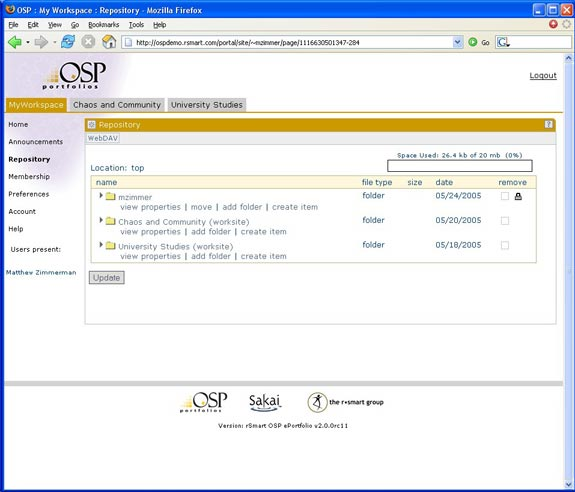

osp>tour>mzimmerman>workspace
1.Select Repository (in My Workspace)
•Web-based file system
•Repository travels across CIGs
•Access from Desktop (WebDAV)
2.Two types of folders
•Personal
•Shared CIG
3.Expand folders in mzimmerman and Mentors
4.Create a folder
5.Complete Contact Info Form
6.Upload a file
7.Upload project folder (needed later for matrix)
8.Point out the “Space Used”
•Institutional control of disk quotas
